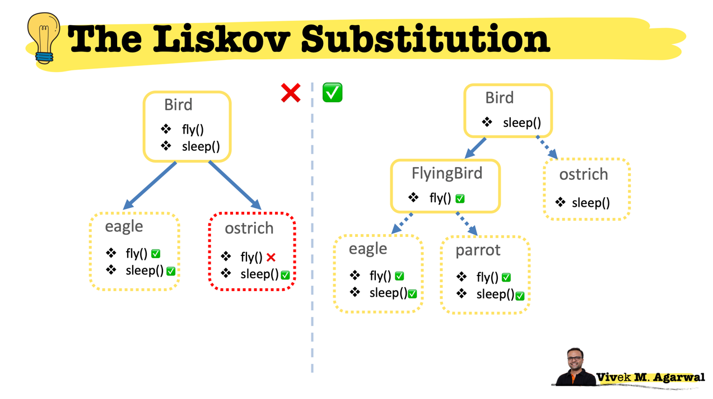

The following 5 concepts make up our SOLID principles:
Single Responsibility
Open/Closed
Liskov Substitution
Interface Segregation
Dependency Inversion
This principle states that a class should only have one responsibility. Furthermore, it should have only one reason to change.
Benifits of the principle:
This priciple states that a classes should be open for extension, but closed for modification. In doing so, we stop ourselves from modifying existing class which might have been tested and deployed somewhere.
This priciple states that if class S is a subtype of class T, then the objects of type T may be replaced with objects of type S. object of type T may be substituted with any object of subtype S.
In other words, if something is true about the parent, it must be true all the way down the chain.
Let's say we have a (T) class called Bird and it can fly(); then all the (S) subclasses of Bird like Eagle and Ostrich must be able to fly();
But here in thid example, we have broken the Liskov Substitution principle as ostrich's dont fly!!

To fix this (one of the many options), we can create a class called FlyingBird and move the fly() method in the FlyingBird. Now all the objects of the FlyingBird and the subclasses of the FlyingBird would be able to fly().
This principle requires all subclasses to behave in the same way as the parent class. To acheive that, your subclasses need to follow these rules:
This principle states that the interfaces can be split up into smaller interfaces so that no client should be forced to implement the method they dont use.
Since Javascript doesnot have interfaces, we dont have a straight forward way to enforce them. Surely superclasses can act like a guide.
One way I've seen some people enforcing the implemetation of required functions is by throwing an error in the super class
var required = function(){ throw new Error("Implement!"); };
requiredFunction: required;
The general idea of this principle is as simple as it is important: High-level modules, which provide complex logic, should be easily reusable and unaffected by changes in low-level modules, which provide utility features. To achieve that, you need to introduce an abstraction that decouples the high-level and low-level modules from each other.